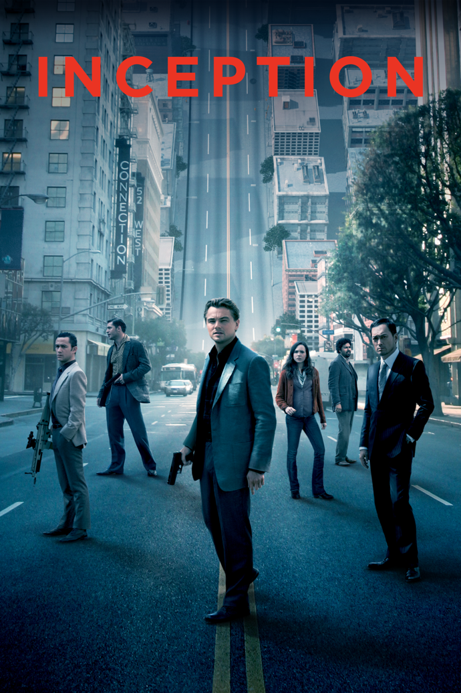
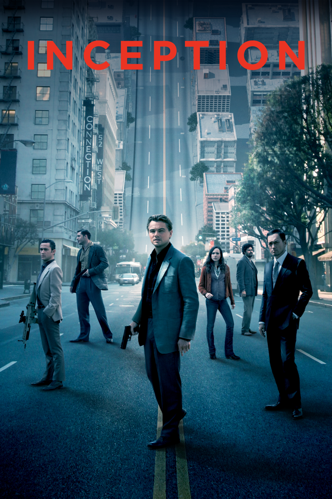
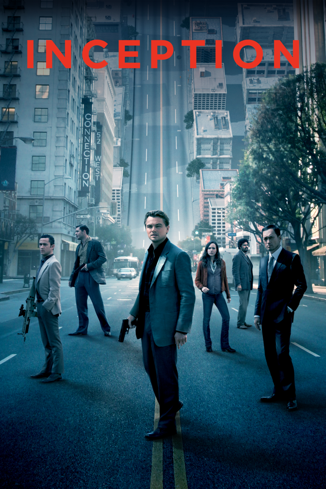
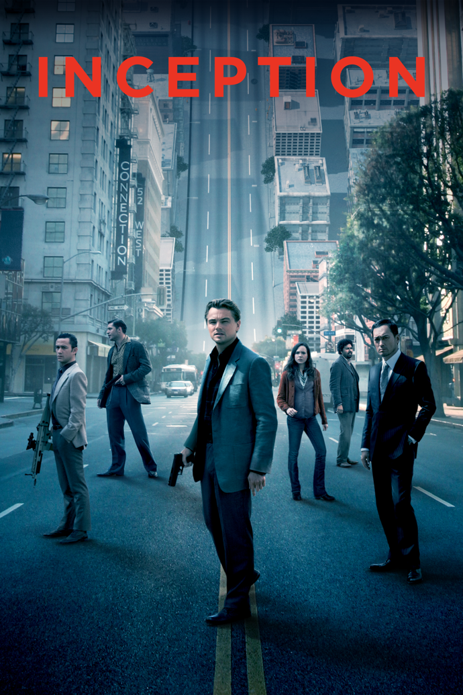

 

In 1912, the Titanic, the world's most luxurious passenger ship, set out across the Atlantic for New York City. It would never see it's destination.
1500 people were on the ship, some first class, others restrained to the lower decks where windows were limited. Either way, the passengers on board the Titanic held high hopes, not because it was deemed "the unsinkable ship" but because they were leaving their past behind them and preparing for a new life in America.
To Jack, a homeless artist, winning two tickets on the luxery liner was the best thing that ever happened to him. His life, as well as everyone else on the ship, would be changed forever. Even before he discovered the fate of the Titanic did he know what his destiny was; he met Rose.
Rose was a troubled young woman living in a rich society, engaged to a millionaire that her mother had sought out. She was living in a fantasy, a fantasy that she didn't want, and she was looking for a way out.
Jack heroically saved Rose's life and was immediately thrust into her world though no one knew he fit in. He was the only one that could see the anguish that Rose was in... He was the only one who could get her out of it.
Their love affair would be cut short. Nighttime was a dangerous time for ships in that time period, manually having to look for obstructions in the ocean. Titanic's crew saw the iceberg too late and they struck it, the side of their hull ripping to shreds. The unsinkable ship was going to sink and more than half of the people on board were going to die.

Acclaimed filmmaker Christopher Nolan directs an international cast in an original sci-fi actioner that travels around the globe and into the intimate and infinite world of dreams.
Dom Cobb (Leonardo DiCaprio) is a skilled thief, the absolute best in the dangerous art of extraction, stealing valuable secrets from deep within the subconscious during the dream state, when the mind is at its most vulnerable.
Cobb’s rare ability has made him a coveted player in this treacherous new world of corporate espionage, but it has also made him an international fugitive and cost him everything he has ever loved.
Now Cobb is being offered a chance at redemption. One last job could give him his life back but only if he can accomplish the impossible–inception.
Instead of the perfect heist, Cobb and his team of specialists have to pull off the reverse: their task is not to steal an idea but to plant one.
If they succeed, it could be the perfect crime. But no amount of careful planning or expertise can prepare the team for the dangerous enemy that seems to predict their every move. An enemy that only Cobb could have seen coming. This summer, your mind is the scene of the crime.

Eighteen months after swooping dramatically off of a roof at the finale of Batman Begins, everyone's favorite brooding vigilante (Christian Bale) is hard at work making life safer for Gotham City. The bad guys are running scared… until they get a visit from the Assassination Fairy, wearing a purple suit and calling himself the Joker (Heath Ledger). He promises to get rid of the Batman in exchange for a literal mountain of money, as well as putting the kibosh on crusading district attorney Harvey Dent (Aaron Eckhart).
Meanwhile, Batman and Dent team up with Lt. James Gordon (Gary Oldman) to put the mob's last remaining money launderer out of business. They think they've finally nabbed him when the Joker escalates his campaign in earnest: assassinating a judge, blowing up a hospital and executing Gordon's big witness against the mob. Batman tries to hang on as best he can, but when his best friend (and Harvey's best gal) Rachel gets killed in the middle of it all, even he questions how far he'll have to go to bring this guy down. When the Joker puts the kibosh on Harvey's sanity for good, it turns him into the villainous Two-Face. Batman has to stop not one, but two madmen intent on destroying any semblance of order in the city.
The Joker gets ready for Batman by wiring a pair of ferries to blow up, one filled with good citizens and one filled with imprisoned criminals, then giving the detonator for each ferry in the hands of the other and threatening to blow them both up if someone doesn't pull the trigger. The Batman bets otherwise and he's right: after stopping the cops from inadvertently killing a separate group of innocent hostages (the Joker's a busy guy in this one), he subdues the Joker and they both watch while neither ferry blows up.
Sadly, the Joker now has Harvey on his side, and in taking down the Clown Prince of Crime, Batman has forgotten about Two-Face. Ole Scabby Chin has taken Jim Gordon's family hostage, leaving Batman to rush off once again and save the day. In the ensuing scuffle, Harvey falls to his death, and while Batman saves Gordon's family, he can't stop what's about to happen. Word of Harvey's insanity will get out and all of those criminals he put away will be back on the street.
There's only one way to stop that from happening. Batman takes the blame for Harvey's crimes. That leaves Harvey's prosecution intact and the people of Gotham safe, but at the cost of the reputation of the one man who made it all possible. Yeah, we know, it's kind of a downer. If you want something happier, stick around for The Dark Knight Rises, which brings Nolan's Batman trilogy to a somewhat more upbeat conclusion.

A young urban professional who works for a major car manufacturer can't sleep. Although he doesn't have any of the associated afflictions, he stumbles across support groups as a means to let out whatever emotions he is feeling, which in turn allows him to sleep.
But the use of these support groups is ruined when he meets a young woman named Marla Singer, who is also going to all these support group meetings. Because he knows she too is not afflicted with any of the maladies for which the groups exist, her presence has lessened the impact of the stories he hears.
His life changes when he meets a soap manufacturer named Tyler Durden, who in many ways is the antithesis of the insomniac. Due to unusual circumstances with his own condo, the insomniac moves in with Tyler, who lives in a large dilapidated house in an otherwise abandoned part of town.
After a bit of spontaneous roughhousing with Tyler in a bar parking lot, the insomniac finds it becomes a ritual between the two of them, which helps him cope with the other more difficult aspects of his life.
The fights also attract a following, others who not only want to watch but join in. Understanding that there are other men like them, the insomniac and Tyler begin a secret fight club. As the fight club's popularity grows, so does its scope in all aspects.
Marla becomes a circle not specifically of the fight clubs but of Tyler and the insomniac's collectives lives. As the nature of the fight clubs becomes out of control in the insomniac's view, the insomniac's life, in association, is one where he no longer understands what is happening around him, or how he can get out of it without harming himself.

New Rochelle, the 1960s. High schooler Frank Abagnale Jr. idolizes his father, who's in trouble with the IRS.
When his parents separate, Frank runs away to Manhattan with $25 in his checking account, vowing to regain dad's losses and get his parents back together.
Just a few years later, the FBI tracks him down in France; he's extradited, tried, and jailed for passing more than $4,000,000 in bad checks.
Along the way, he's posed as a Pan Am pilot, a pediatrician, and an attorney.
And, from nearly the beginning of this life of crime, he's been pursued by a dour FBI agent, Carl Hanratty.
What starts as cat and mouse becomes something akin to father and son.